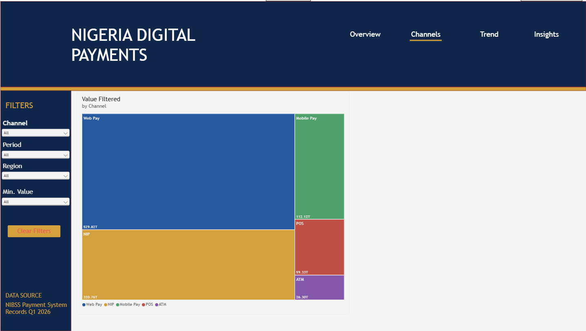
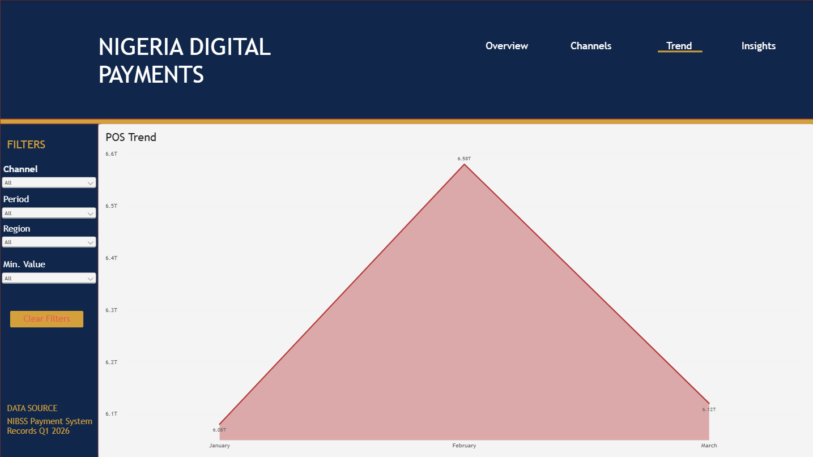
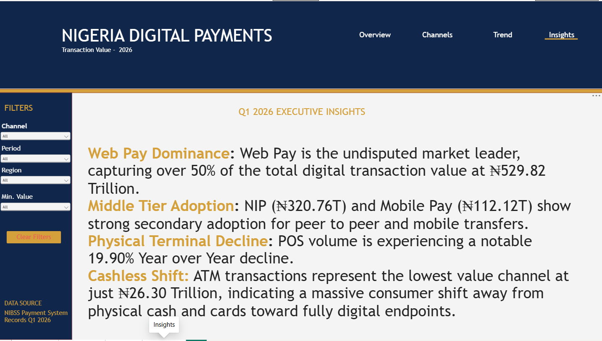

Objective
Built a multi-page interactive analytics application to visualize transaction volume, channel dominance, and year-over-year growth across the Nigerian digital payment ecosystem using NIBSS data. The application is designed for executive-level consumption with trillion-scale figures formatted for clarity.
Data Modeling
Engineered a robust relational data model joining transaction fact tables with monthly time series data using a custom period bridging table. This structure enabled seamless cross-page filtering while maintaining accurate aggregations across all four report pages.
Advanced DAX
Developed dynamic measures utilizing TREATAS and ISBLANK logic to synchronize parameter slicers across four independent report pages while maintaining visual stability. Measures handle trillion-level figures with custom formatting for readability.
Application Design
Designed a professional dark mode UI with a consistent navy and gold color scheme, intuitive tab navigation mirroring the four report pages (Overview, Channels, Trend, Insights), synchronized cross-filtering, and custom formatted tooltips tailored for trillion-level figures.
Report Pages
1. Overview — KPI summary & channel breakdown
Total Transaction Value: ₦1.05 Quadrillion · POS Transactions: 2.92 Billion · POS Volume YoY: -19.90% · Deployed POS Terminals: 5.56 Million. Donut chart shows share of value by channel; bar chart ranks channels by transaction value.
2. Channels — Treemap of transaction value by channel

Treemap visualization makes channel dominance immediately visible. Web Pay (₦529.82T) occupies over half the total area, followed by NIP (₦320.76T), Mobile Pay (₦112.12T), POS (₦59.33T), and ATM (₦26.30T).
3. Trend — POS monthly trend line

Area chart tracking POS transaction value across January–March 2026. Peak in February (₦6.58T) with decline into March (₦6.13T), consistent with the broader YoY volume contraction narrative.
4. Insights — Executive narrative page

Structured executive insights summarizing Web Pay dominance, NIP and Mobile Pay secondary adoption, physical terminal decline, and the cashless shift away from ATM and POS channels.
Conclusion
This application demonstrates end-to-end Power BI development — from data modeling and advanced DAX to professional UI design. The insights reveal a clear structural shift in Nigeria's payment landscape: digital endpoints are displacing physical channels, with Web Pay and NIP together accounting for over 80% of total transaction value in Q1 2026.